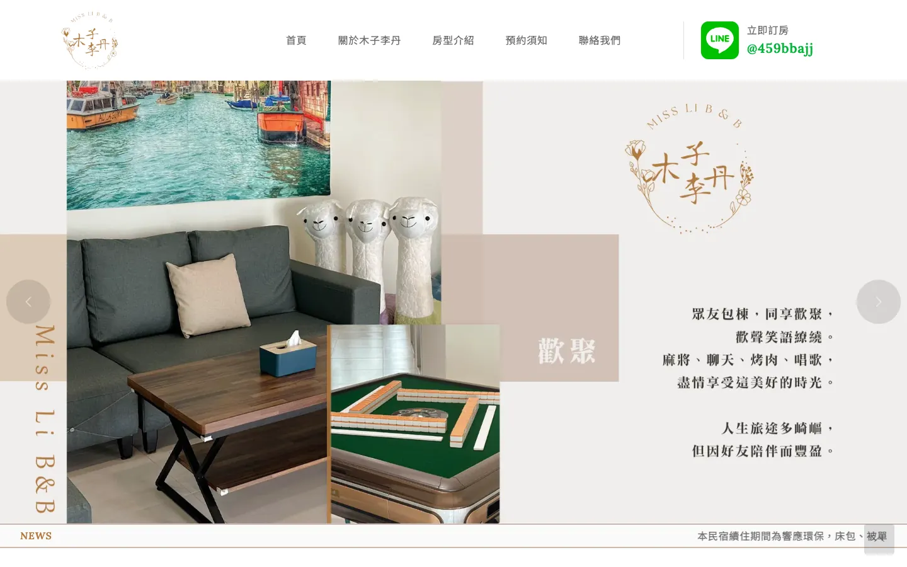
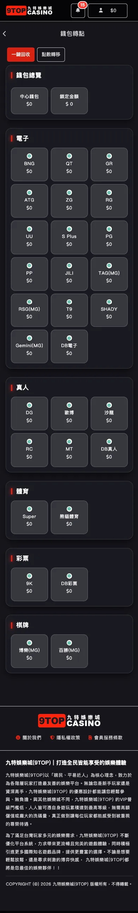
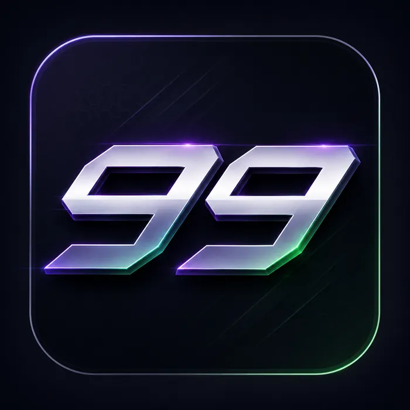
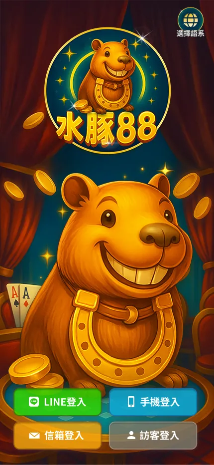
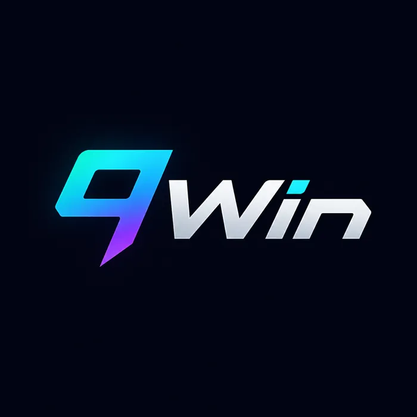
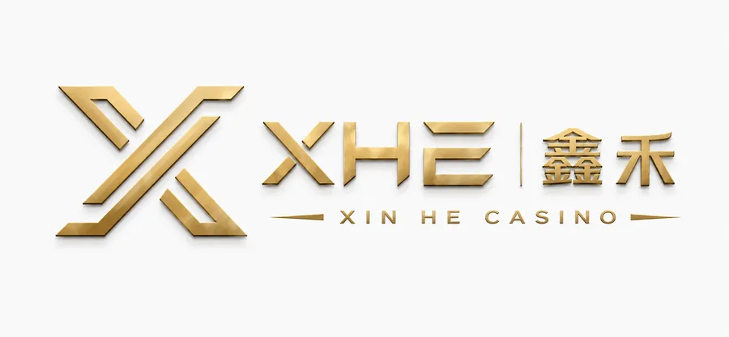
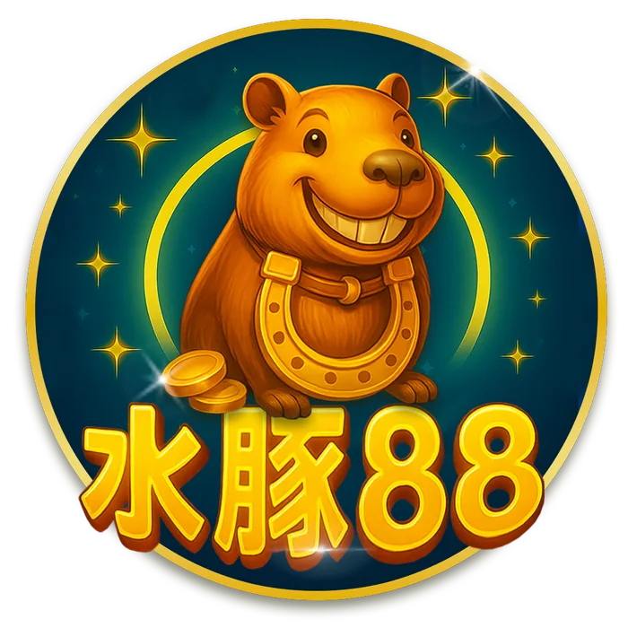
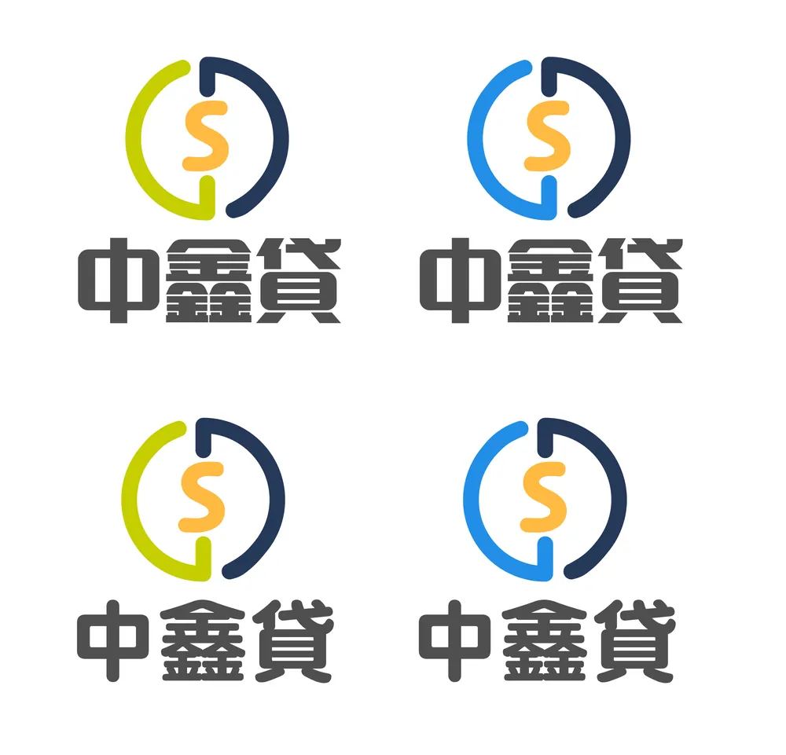
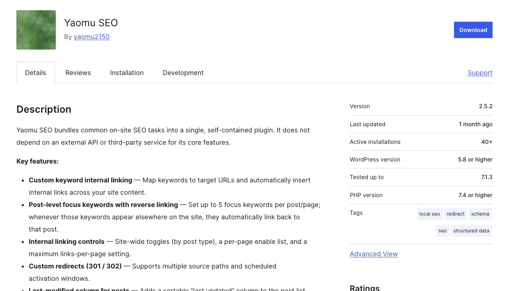

6套平台介面，PC 與 H5 雙版
10個品牌官網，手刻 6 個、WordPress 4 個
4個從零建置的網站，附 SEO 實際成效
每一個按鈕，都想讓玩家少想一秒。
玩家不會停下來讀說明，所以我把大廳、館別入口和活動輪播排得一眼就懂。六個品牌各有自己的個性，用起來卻是同一種順手，電腦和手機都一樣。
看不見的內頁，我一樣用心。
存款、取款、轉點這些頁面不在首頁，卻是會員每天真正在用的地方。這套會員系統後來成了多數平台共用的版本，這裡以九特為例，每一頁都有對應的手機版。

沒有 AI 的年代，一行一行寫出來。
這幾個網站完成於 AI 工具普及之前，沒有自動生成，也沒有 AI 幫忙寫程式。從恆春的民宿、墾丁的海產店到金融代辦，每一頁都是我自己切版、自己寫互動，這也是我到今天最紮實的基本功。
會手刻，也懂 WordPress。
不是每個專案都需要從零寫起。這四個官網以 WordPress 建置，版型一樣由我自己設計，佈景或外掛做不到的地方，就用 HTML、CSS 親手補上。工具換了，我對畫面的要求沒有變。
滑過畫面看整頁，點擊放大
每週，都在跟注意力賽跑。
社群貼文被滑過只要一秒，所以每張圖我都先想清楚最想讓人記住的那一句，再決定畫面怎麼排。新遊戲上線和節慶檔期，也會做成短影音。
替品牌找到第一眼的樣子。
Logo 是品牌和人見面的第一句話。從字標、App 圖示到一隻水豚吉祥物，我會反覆修到它放大縮小都站得住，再延伸成整套視覺。






網站上線，才是我工作的開始。
這四個網站都是我從零設計、建置上線，之後再自己做 SEO。比起一張排名截圖，我更想讓你看到真實的成長曲線：同樣長的兩段時間，前後差了多少。
圖表裁切自 Google Search Console（搜尋類型：網路，國家/地區：台灣），已移除網站資源名稱、網址與品牌字詞；關鍵字與頁面改以類別描述。基於客戶保密，不公開品牌、網域與完整關鍵字清單。曝光數以「萬」顯示者，成長率依 GSC 顯示值計算，為約略值。
把反覆在做的 SEO，寫成一個外掛。
每次架站，內部連結、轉址、Schema 和圖片 alt 都要重做一遍。我把這些工作整理成 Yaomu SEO，上架到 WordPress 官方外掛目錄，不依賴外部 API，裝上就能用。
內部連結
- 自訂關鍵字對應網址，自動在全站插入內部連結
- 每篇文章最多 5 組焦點關鍵字，出現時自動連回該篇
- 依文章類型開關、指定頁面啟用，並限制每頁連結數
網站維護
- 301 / 302 轉址，支援多個來源路徑與排程生效
- 文章列表新增可排序的「最後更新」欄位
- 上傳圖片時依檔名自動填入標題、alt 與說明
結構化資料與 AI 搜尋
- 輸出 Organization、Article、FAQPage、Breadcrumb、Product 等 Schema
- 在地商家資訊：地址、營業時間、座標與社群連結
- 自動產生並快取 /llms.txt，讓 AI 搜尋讀懂網站內容

陪我把想法做出來的工具。
設計
- Figma
- Photoshop
- Illustrator
- AI 生圖輔助
- 短影音剪輯
前端
- HTML5
- CSS3 / RWD
- JavaScript
- jQuery
- Bootstrap
- Swiper / Slick
- WordPress
- WordPress 外掛開發
SEO
- Google Search Console
- 關鍵字研究
- 搜尋意圖分析
- 主題群內容規劃
- SEO 文章撰寫
想一起做點什麼嗎？
不論是新網站、改版還是 SEO，或你正在找一位能把設計、技術和數據串在一起的夥伴，都很歡迎來信聊聊。
寄信給我
yaomu2150@gmail.com